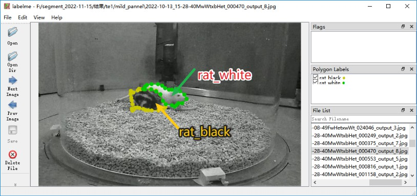
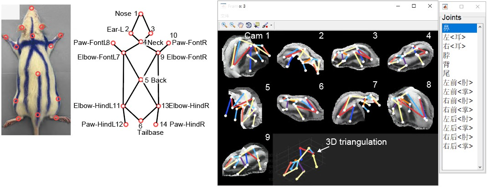
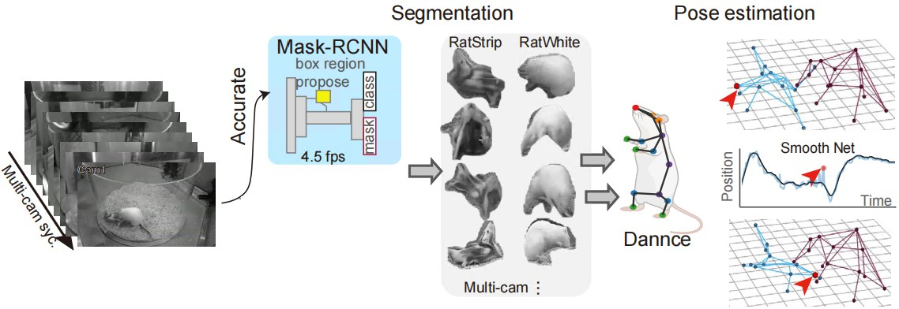
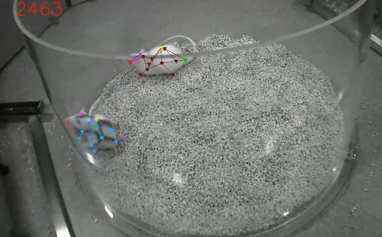

Dataset Creation & Model Update
Annotate Rat Segmentation
First, use the Labelme software for data annotation. Use the Polygon tool to create labels for black rat rat_black and white rat rat_white.

Update Segmentation Model
Run the following code line by line, where mask_rcnn_r101_fpn_2x_coco_bwrat_816x512_cam9.py is the model configuration file (default, recommended). If needed, it can be changed to other model configurations.
# 1. Data preparation: labelme to coco
# su chenxinfeng
conda activate DEEPLABCUT
# Rename the labelme data annotation folder project.
## Note 1: The folder should not have Chinese characters, and the labeled images should not have Chinese characters.
## Note 2: The number of labeled images n>20 to ensure training effect.
LABEL_ME_POJECT=/mnt/liying.cibr.ac.cn_xxx/labelimages
NEW_NAME=/mnt/liying.cibr.ac.cn_xxx/bw_rat_1280x800_20230524
mv $LABEL_ME_POJECT $NEW_NAME
# Convert the labelme data annotation folder project to coco dataset format.
# Note: The category names should be checked in MMDET_DATA_TARGET, do not write them randomly.
python -m lilab.cvutils.labelme_to_coco $NEW_NAME
# Split the coco dataset into training set and validation set. The -s parameter indicates the proportion of the training set, 0.8 or 0.9 is commonly used.
python -m lilab.cvutils.coco_split -s 0.9 ${NEW_NAME}_trainval.json
# Copy the labeled dataset to the mmdet dataset directory
MMDET_DATA_TARGET=/home/liying_lab/chenxinfeng/DATA/CBNetV2/data/rats
cp -r ${NEW_NAME}_trainval.json ${NEW_NAME}_train.json ${NEW_NAME}_val.json \
${NEW_NAME} $MMDET_DATA_TARGET/
# 2. Model training
conda activate mmpose
cd /home/liying_lab/chenxinfeng/DATA/CBNetV2/
# Modify the configuration file, open it with vscode.
# Modify the `data` field to point to the coco dataset directory just copied.
CONFIG=$PWD/mask_rcnn_r101_fpn_2x_coco_bwrat_816x512_cam9.py
echo $CONFIG
# Use multi GPU or single GPU to train the model
# tools/dist_train.sh $CONFIG 4
python tools/train.py $CONFIG
# 3. Model acceleration
python -m lilab.mmdet_dev.convert_mmdet2trt $CONFIG
# 4. Check if the model update is successful
ls -lh work_dirs/mask_rcnn_r101_fpn_2x_coco_bwrat_816x512_cam9/latest.*
latest.trt model weight file is obtained.
Annotate Rat 3D Keypoints
First, use Label3D_Manager for data annotation. Label3D_manager is a modified version of the official version to adapt to videos recorded by OBS, and it already uses 14 keypoints of rats. 
You should get the anno.mat file, which contains the annotated 3D keypoint information.
Prepare Dataset
Trae
我需要查看"社交三维姿态重构/application.md"文件的内容，以便进行翻译。我将使用view_files工具查看该文件的前50行内容。
docs/社交三维姿态重构/application.md 1 - 50
我需要查看"社交三维姿态重构/dataset.md"文件的内容，以便进行翻译。我将使用view_files工具查看该文件的前50行内容。
docs/社交三维姿态重构/dataset.md 1 - 50
我需要检查英文目录中是否已存在"社交三维姿态重构/application.md"文件，若不存在则创建它并翻译内容。我将使用list_dir工具查看"/Users/chenxinfeng/ml-project/CIBR_Social_Seq/docs/en/社交三维姿态重构"目录。
CIBR_Social_Seq/docs/en/社交三维姿态重构
I will translate the content of "社交三维姿态重构/application.md" and "社交三维姿态重构/dataset.md" and create new files in the corresponding English directory.
Social 3D Pose Reconstruction

Raw multi-view videos, after segmentation, keypoint reconstruction and smoothing, obtain
stable 3D pose coordinates.
Raw Video
The video comes from OBS Studio recorded 9-view camera video. The multi-camera images have been time-synchronized, with an error of 1 frame or less, which can be ignored.

Segmentation
Using the Mask-RCNN model, the identity of black and white rats is recognized, and the pixel area is segmented.

Keypoint Reconstruction
Execute DANNCE keypoint prediction + neural network smoothing to obtain 3D pose.

Dataset Creation & Model Update
Annotate Rat Segmentation
First, use the Labelme software for data annotation. Use the Polygon tool to create labels for
black rat rat_black and white rat rat_white.
Update Segmentation Model
Run the following code line by line, where mask_rcnn_r101_fpn_2x_coco_bwrat_816x512_cam9.py is
the model configuration file (default, recommended). If needed, it can be changed to other model
configurations.
# 1. Data preparation: labelme to coco
# su chenxinfeng
conda activate DEEPLABCUT
# Rename the labelme data annotation folder project.
## Note 1: The folder should not have Chinese characters, and the labeled images should not have
Chinese characters.
## Note 2: The number of labeled images n>20 to ensure training effect.
LABEL_ME_POJECT=/mnt/liying.cibr.ac.cn_xxx/labelimages
NEW_NAME=/mnt/liying.cibr.ac.cn_xxx/bw_rat_1280x800_20230524
mv $LABEL_ME_POJECT $NEW_NAME
# Convert the labelme data annotation folder project to coco dataset format.
# Note: The category names should be checked in MMDET_DATA_TARGET, do not write them randomly.
python -m lilab.cvutils.labelme_to_coco $NEW_NAME
# Split the coco dataset into training set and validation set. The -s parameter indicates the
proportion of the training set, 0.8 or 0.9 is commonly used.
python -m lilab.cvutils.coco_split -s 0.9 ${NEW_NAME}_trainval.json
# Copy the labeled dataset to the mmdet dataset directory
MMDET_DATA_TARGET=/home/liying_lab/chenxinfeng/DATA/CBNetV2/data/rats
cp -r ${NEW_NAME}_trainval.json ${NEW_NAME}_train.json ${NEW_NAME}_val.json \
${NEW_NAME} $MMDET_DATA_TARGET/
# 2. Model training
conda activate mmpose
cd /home/liying_lab/chenxinfeng/DATA/CBNetV2/
# Modify the configuration file, open it with vscode.
# Modify the `data` field to point to the coco dataset directory just copied.
CONFIG=$PWD/mask_rcnn_r101_fpn_2x_coco_bwrat_816x512_cam9.py
echo $CONFIG
# Use multi GPU or single GPU to train the model
# tools/dist_train.sh $CONFIG 4
python tools/train.py $CONFIG
# 3. Model acceleration
python -m lilab.mmdet_dev.convert_mmdet2trt $CONFIG
# 4. Check if the model update is successful
ls -lh work_dirs/mask_rcnn_r101_fpn_2x_coco_bwrat_816x512_cam9/latest.*
latest.trt model weight file is obtained.
Annotate Rat 3D Keypoints
First, use Label3D_Manager for data annotation. Label3D_manager is a modified version of the official version to adapt to videos recorded by OBS, and it already uses 14 keypoints of rats.
You should get the anno.mat file, which contains the annotated 3D keypoint information.
Prepare Dataset
conda activate mmdet
source='/mnt/liying.cibr.ac.cn_usb3/wsy/ysj/segpkl/outframes'
datadir='/home/liying_lab/chenxinfeng/DATA/dannce/data/bw_rat_1280x800x9_2024-11-27_photometry_voxel'
cp -r $source $datadir
python -m lilab.dannce.s1_anno2dataset $datadir/anno.mat
# Find the generated *_voxel_anno_dannce.pkl, use the code to correct its body center point (using the 2D mask center point, triangulated to get the 3D center point).
python -m lilab.dannce.p2_dataset_com3d_refine_byseg ${datadir}_anno_dannce.pkl
Train DANNCE Model
Run the following code line by line to train the model. Where rat14_1280x800x9_mono_young is a
project environment that has been created (recommended). According to requirements, other
projects can also be selected.
# cd into the project path
cd /home/liying_lab/chenxinfeng/DATA/dannce/demo/rat14_1280x800x9_mono_young
# Change the project configuration file, add the dataset path.
echo io_max.yaml
# Modify io_max.yaml, add data to exp/label3d_file
python -m dannce.cli_train ../../configs/dannce_rat14_1280x800x9_max_config.yaml
Convert the model to a tensorrt accelerated model.
# Offline scenario.
cd /home/liying_lab/chenxinfeng/DATA/dannce/demo/rat14_1280x800x9_mono_young/DANNCE/
train_results/MAX
python -m lilab.dannce.t1_keras2onnx latest.hdf5
choosecuda 3,0,1,2
polygraphy run /home/liying_lab/chenxinfeng/ml-project/LILAB-py/lilab/tensorrt/
constrained_network.py \
--precision-constraints obey \
--trt-min-shapes input_1:[1,64,64,64,9] \
--trt-max-shapes input_1:[4,64,64,64,9] \
--trt-opt-shapes input_1:[2,64,64,64,9] \
--trt --fp16 --save-engine latest_dynamic.engine &
choosecuda 0,1,2,3
polygraphy run /home/liying_lab/chenxinfeng/ml-project/LILAB-py/lilab/tensorrt/
constrained_network.py \
--precision-constraints obey \
--input-shapes input_1:[2,64,64,64,9]\ \
--trt --fp16 --save-engine latest.engine &
# Realtime scenario
python -m lilab.dannce.t1_keras2onnx_rt latest.hdf5
choosecuda 1,2,3,0
polygraphy run /home/liying_lab/chenxinfeng/ml-project/LILAB-py/lilab/tensorrt/
constrained_network_rt.py \
--precision-constraints obey \
--trt-min-shapes input_1:[1,64,64,64,9] \
--trt-max-shapes input_1:[2,64,64,64,9] \
--trt-opt-shapes input_1:[1,64,64,64,9] \
--trt --fp16 --save-engine latest.idx.engine
wait
Finally, latest_dynamic.engine and latest.idx.engine are obtained.